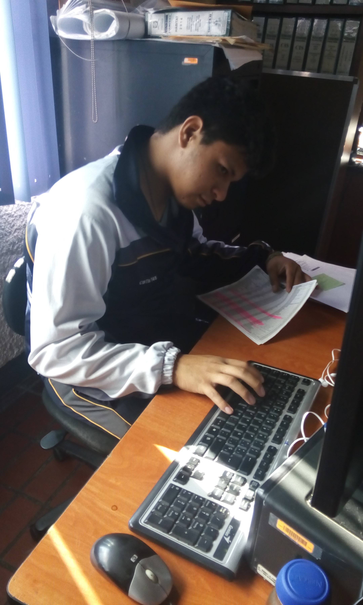
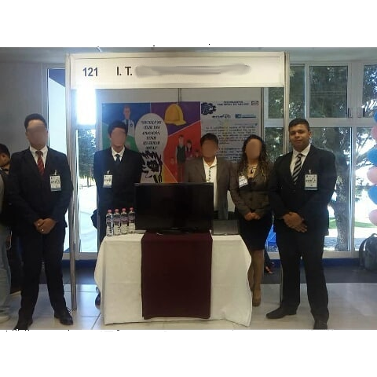

Since high school, I have been deeply interested in computers, software, and problem solving. I studied Informatics as my career and on the second year, I discovered my passion for programming, starting with Java. I then learned more about structured programming, OOP, algorithms, and other topics such as networks, routing, and topologies. On the fourth year, I found my second passion: Android Application Development. Thanks to that, I enjoy creating apps with innovative and original ideas. Finally, in the last two years of high school, I learned how to create websites using JS, PHP, HTML, and CSS. However, all good things must come to an end, and my high school journey finished in 2017, but a new adventure began...


Well, university came next! I studied Computer Systems Engineering and learned even more about the fascinating world of informatics, including hardware and advanced networks. Additionally, I discovered my third passion: learning. I consider myself a self-taught individual and am always on the lookout for new sources of knowledge, such as Udemy, Coursera, online books, Google Codelabs, and more. My goal is to learn something new every day and put it into practice. This passion led me to participate in local innovation tournaments, such as with "YOVIGILO," a mobile application for Android that used real-time chat and GPS tracking to enhance neighborhood safety. We almost won the regional tournament! My journey at the university was challenging but ultimately rewarding, and I successfully completed my degree in December 2021.